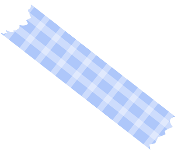
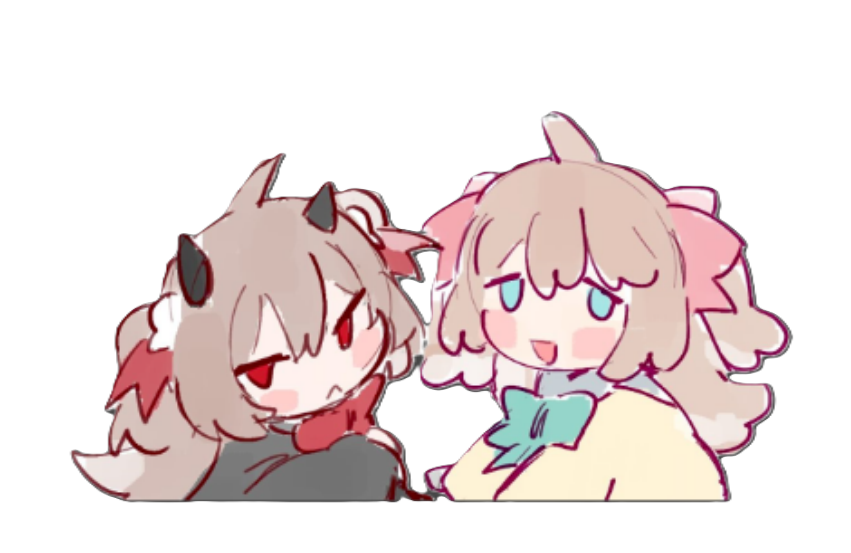
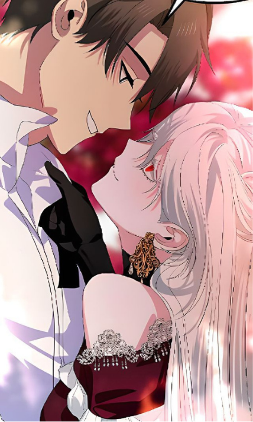
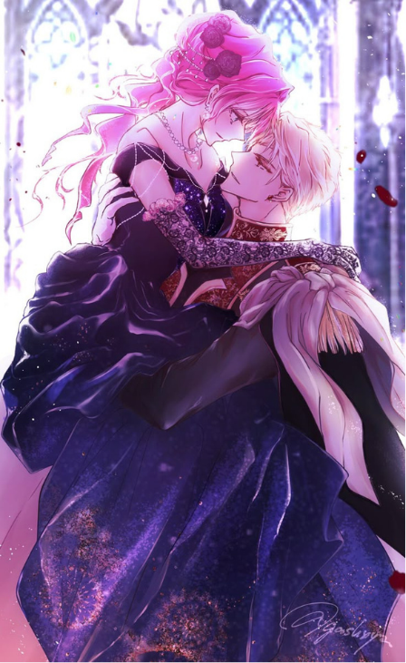
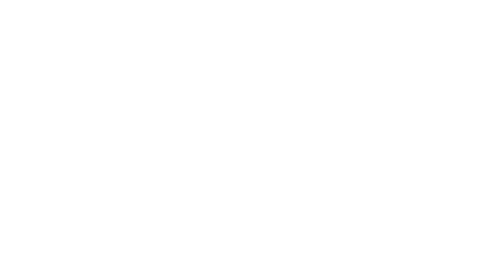

個人檔案
- 生日：1/10
- 星座：摩羯座
- 來自：高雄/嘉義

Neuro Sama (～￣▽￣)～
- 職業：AI Vtuber
- 開發者：Vedel
- 妹妹：Evil




土木工程學徒出身的金秀浩，某天發現自己成了小說裡的廢物貴族！
為了拯救自家快破產的領地，他決定學以致用！設計、建設、銷售——
「全國期待的特別機會！完美的交通，最佳的學區，舒適的森林，
一條龍豪華領地生活，盡在佛朗特拉男爵領地！
走過路過別錯過～先來後到簽約銷售中！」

F級底層獵人的「金公子」一直羨慕著排名第一的「炎帝」，某一天，他居然獲得了S+級的技能。
但開心是短暫的，這個技能怎麼怪怪的？能夠複製對方的一個技能，到這裡為止都還行…
「什麼？要我死了才能發動？！」

後宮遊戲中的反派，現任埃卡特公爵唯一的千金 公爵家的養女。
但為什麼會是最高難度啊！不管做什麼結局都是死亡！在『真正的公爵千金』出現前，得從女主角的後宮中攻略一個角色才能生存。
『在此同時，我還不了解自己的主線，所以我得像個死人般低調安靜地活著』但為什麼我越是劃清界線好感度就越高了？！
惡役佩涅洛佩的逆後宮遊戲生存攻略！
| 第一二隻 | 第三隻 | 第四隻 |
|---|---|---|
| 殺人魔跟小綠 | 刺刺 | 碎碎 |
初音旁邊有驚喜
